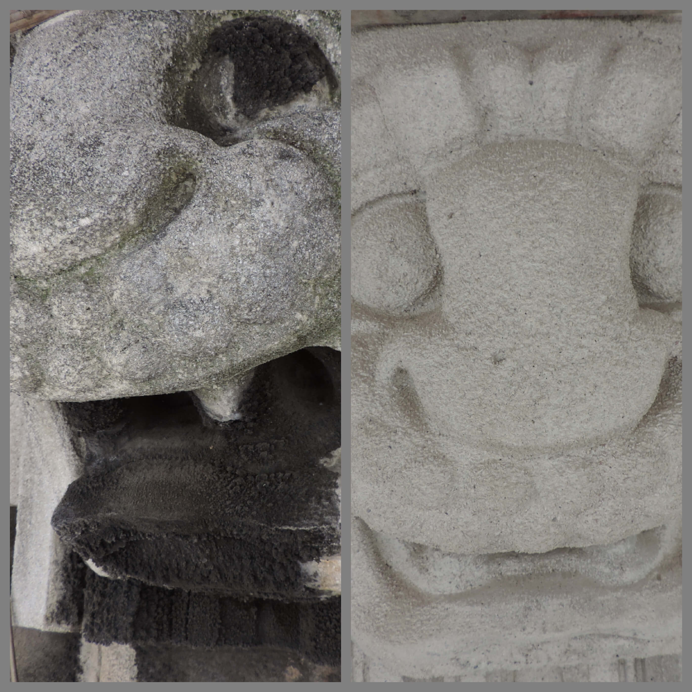
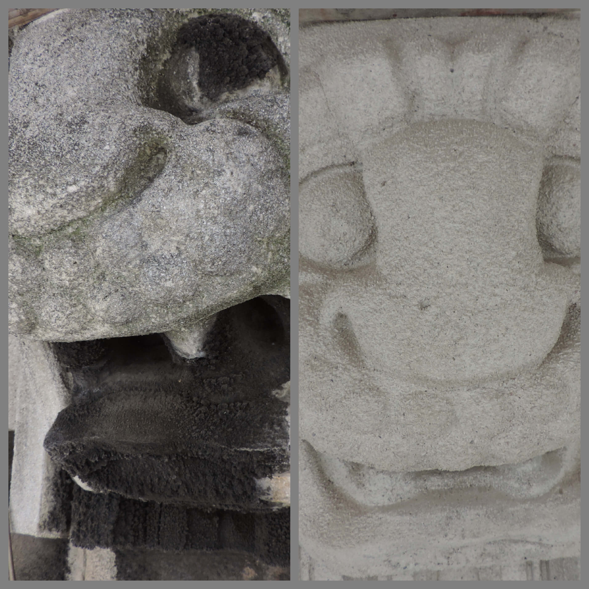
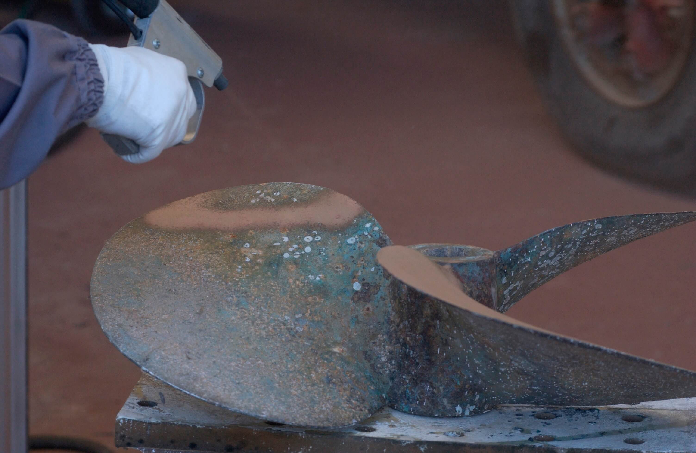
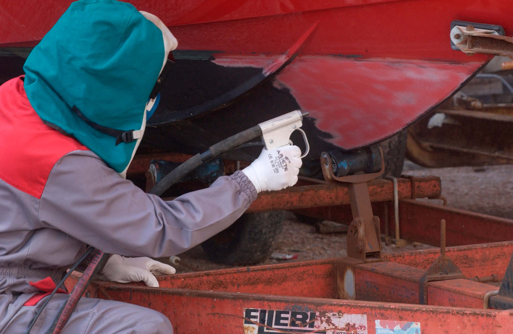
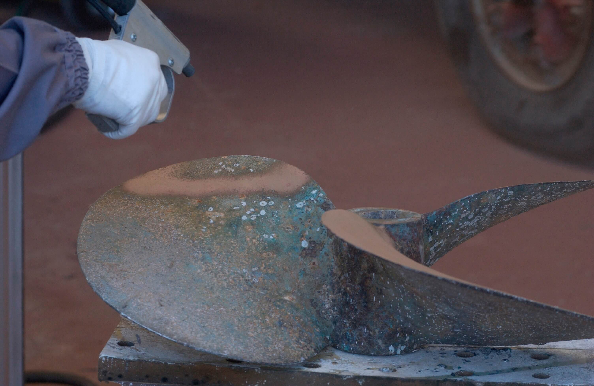
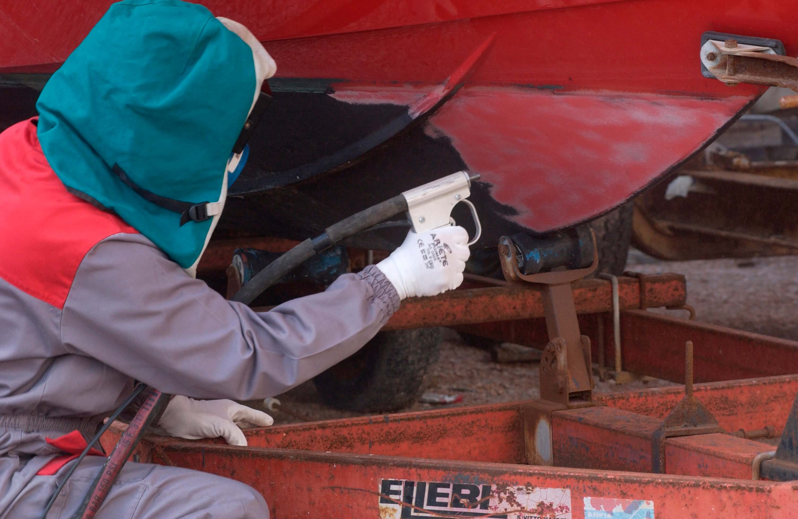
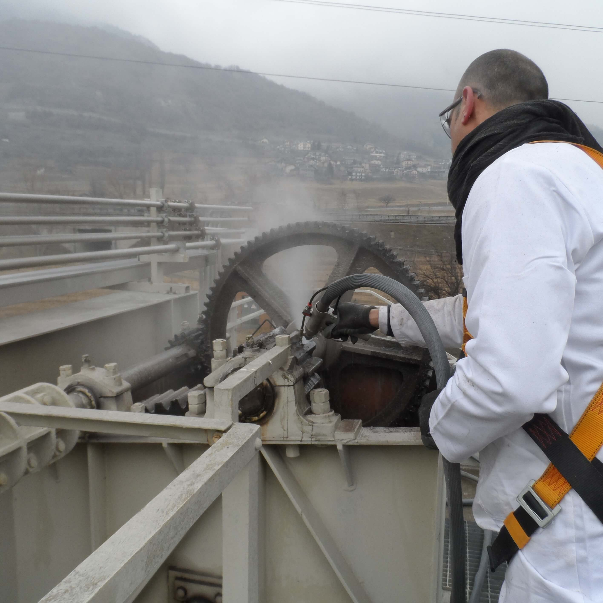
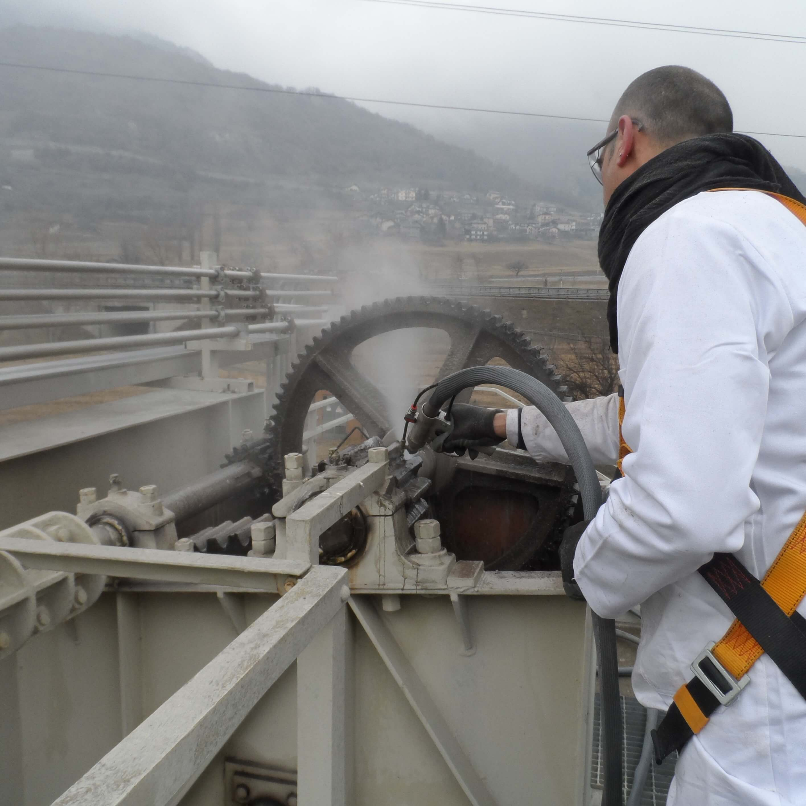
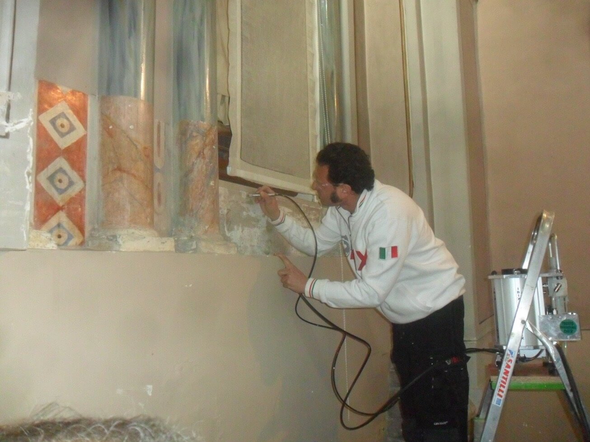
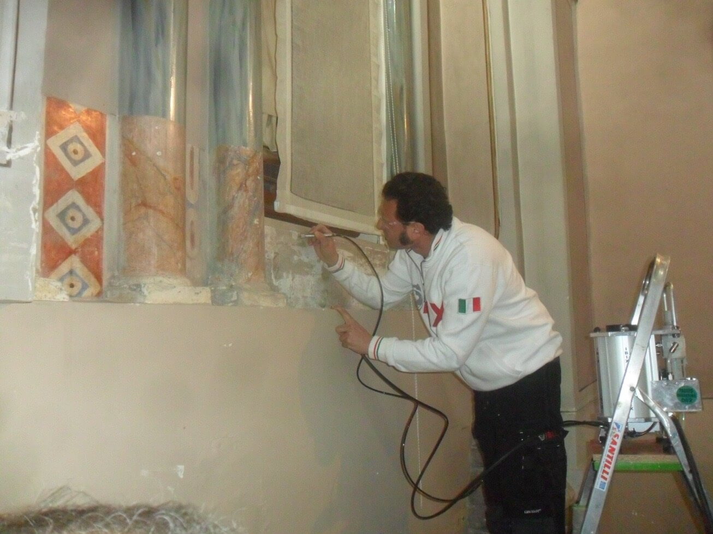

Оборудование
IBIXpro - молодая динамичная компания, которая предлагает высококачественные продукты и услуги компании IBIX, пропитанная деловым духом и индивидуальным подходом, ориентированным на клиента. Наша компания основывает свою предпринимательскую деятельность на трех основных принципах: солидная репутация, надежность и способность предоставлять специализированные решения. Компания IBIXpro является официальным эксклюзивным представителем компании IBIX на территории Российской Федерации и стран СНГ.
IBIX родился как вызов рынку, чему способствовали основатели Caterina и Susanna Giovannini. Команда компании, обладающая обширным опытом в области инженерного и промышленного дизайна, накопленного за всю ее историю, полностью настроила новую систему пескоструйной обработки, которая является последним словом в технологии и явно более выгодна, чем любая другая система, уже известная до сих пор.
Технология IBIX отличается своей универсальностью – легким и мобильным оборудованием, что облегчает работу на месте, для многогранного применения во многих областях. Эти технические характеристики вскоре станут прямым конкурентным преимуществом для компании, которая через несколько лет расширилась как на национальном, так и на глобальном уровне.
Сегодня IBIX присутствует в более чем 20 странах по всему миру, с надежной сетью партнеров. В Италии была запущена первая франчайзинговая сеть, которая специализируется на предоставлении услуг по уборке и консультациям для решения проблем, связанных с восстановлением строительных поверхностей и поддержанием чистоты города.
Ibix 3 Nano Basic
Система сухой очистки со стандартным зажимом для подключения воздушного шланга и краном-смесителем для смешивания воздуха и абразивного материала.
Вместимость: 3 литра
Стандартный диаметр сопла: 3 мм
Форма выходного отверстия – цилиндрическая
Размер гранул абразивного материала: от 38 мкм до 1,2 мм
Длина шланга: 2,5 м
Минимальный расход воздуха: 300 л/мин
Рабочее давление: от 0,2 до 8 бар
Вес аппарата: ≈ 10 кг (при пустом баке для абразива)

Ibix 3 Nano H20
Система комбинированной (сухой и/или влажной) очистки со стандартным зажимом для подключения воздушного шланга и клапаном для смешивания воздуха и абразивного материала.
Аппарат IBIX® 3 NANO H2O система комбинированной (сухой и/или влажной) очистки со специальной системой быстрого подключения воздушного шланга, который может быть укомплектован двумя легко сменяемыми пистолетами разного типа, то есть стандартным пистолетом для подачи воздухо-абразивной струи, смешиваемой с водой, и пистолетом Helix, предназначенным для создания вихревой струи.
Вместимость: 3 литра
Стандартный диаметр сопла: 3 мм
Форма выходного отверстия: цилиндрическая + специальная насадка для водяного орошения обрабатываемой поверхности
Размер гранул абразивного материала: от 38 мкм до 1,2 мм
Длина шланга: 2,5 м
Минимальный расход воздуха: 300 л/мин
Рабочее давление: от 0,2 до 8 бар
Вес аппарата: ≈ 10 кг (при пустом баке для абразива)

Ibix 9
Данные системы идеально подходят для широкого круга применений, включая очистку поверхностей и их подготовку к покраске. Воздухо-абразивные аппараты ВХ всегда обеспечивают наилучшее сочетание воздуха и абразивного материала, в частности, они требуют очень малого объема воздуха и могут обслуживаться всего одним оператором.
Конструкция: аппарат полностью выполнен из алюминия
Рабочее давление: от 0,2 до 9 бар
Размер гранул абразивного материала: от 38 мкм до 1,2 мм
Минимальный расход воздуха: 500 л/мин
Длина шланга: 6,0 м
Стандартный диаметр сопла: 3 мм
Вместимость: 9 литров
Максимальный размер по высоте: 850 мм
Максимальный размер по ширине: 430 мм
Габариты упаковочной коробки: 640 х 290 х 300
Вес аппарата: ≈ 15 кг (при пустом баке для абразива)

Ibix 25
Конструкция: аппарат полностью выполнен из алюминия
Рабочее давление: от 0,2 до 8,5 бар
Размер гранул абразивного материала: от 38 мкм до 1,8 мм
Минимальный расход воздуха: 1500 л/мин
Длина шланга: 10,0 м
Стандартный диаметр сопла: 5,5 мм
Вместимость: 24,8 литров
Максимальный размер по высоте: 940 мм
Максимальный размер по ширине: 450 мм
Габариты упаковочной коробки: 920 х 530 х 410
Вес аппарата: ≈ 30 кг (при пустом баке для абразива)

Ibix 40
Конструкция: аппарат полностью выполнен из алюминия
Рабочее давление: от 0,2 до 8,5 бар
Размер гранул абразивного материала: от 38 мкм до 1,8 мм
Минимальный расход воздуха: 5000 л/мин
Длина шланга: 10,0 м
Стандартный диаметр сопла: 10 мм
Вместимость: 40 литров
Максимальный размер по высоте: 940 мм
Максимальный размер по ширине: 520 мм
Габариты упаковочной коробки: 1050 х 500 х 490
Вес аппарата: ≈ 40 кг (при пустом баке для абразива)
Ibix 9 H20
Конструкция: аппарат полностью выполнен из алюминия
Рабочее давление: от 0,2 до 9 бар
Размер гранул абразивного материала: от 38 мкм до 1,2 мм
Минимальный расход воздуха: 500 л/мин
Длина шланга: 6,0 м
Стандартный диаметр сопла: 3 мм
Вместимость: 9 литров
Максимальный размер по высоте: 850 мм
Максимальный размер по ширине: 430 мм
Габариты упаковочной коробки: 640 х 290 х 300
Вес аппарата: ≈ 15 кг (при пустом баке для абразива)

Ibix 25 H20
Конструкция: аппарат полностью выполнен из алюминия
Рабочее давление: от 0,2 до 8,5 бар
Размер гранул абразивного материала: от 38 мкм до 1,8 мм
Минимальный расход воздуха: 1500 л/мин
Длина шланга: 10,0 м
Стандартный диаметр сопла: 5,5 мм
Вместимость: 24,8 литров
Максимальный размер по высоте: 940 мм
Максимальный размер по ширине: 450 мм
Габариты упаковочной коробки: 920 х 530 х 410
Вес аппарата: ≈ 30 кг (при пустом баке для абразива)
Ibix 40 H20
Конструкция: аппарат полностью выполнен из алюминия
Рабочее давление: от 0,2 до 8,5 бар
Размер гранул абразивного материала: от 38 мкм до 1,8 мм
Минимальный расход воздуха: 5000 л/мин
Длина шланга: 10,0 м
Стандартный диаметр сопла: 10 мм
Вместимость: 40 литров
Максимальный размер по высоте: 940 мм
Максимальный размер по ширине: 520 мм
Габариты упаковочной коробки: 1050 х 500 х 490
Вес аппарата: ≈ 40 кг (при пустом баке для абразива)

Системы HELIX® универсальная система вихревой очистки
Она представляет собой техническое решение, которое позволяет объединить эф-фект Вентури, который представляет собой формирование вихревой воздушной струи при помощи специального конуса и системы вращательного движения с увеличением площади очищаемой поверхности.
Использование специальных износостойких сплавов карбидов вольфрама и стали из которых производятся сопла соответствующих аппаратов для воздухо абразивной очистки, которые отличаются высокой прочностью и долговечностью даже при использовании очень твердых абразивных материалов.
- Данная технология на 30% быстрее, на 30% эффективнее.
- Разработана специально для деликатной очистки «мягкого» натурального и искус-ственного камня, а также мрамора и дерева.
- Обеспечивает напор воздухо-абразивной струи низкого давления с тангенциальным воздействием на очищаемую поверхность при использовании различных абразивных материалов, таких как карбонаты кальция, скорлупа грецких орехов, альмандиновый гранат, в том числе мелких и сверхмелких фракций.
Очистка поверхностей исторических памятников и объектов и современной архитектуры является наиболее деликатной частью всего проекта консервации.
Технология HELIX® обеспечивает важный вклад в цикл очистки, поскольку она сво-дит к минимуму химические и механические нагрузки на очищаемую поверхность. Опти-мальная калибровка процесса очистки может быть достигнута путем регулирования как ра-бочего давления, так и правильным выбором размера твердости частиц aбразивного мате-риала. По сравнению с традиционной конструкцией, сопла нового поколения системы HELIX® обеспечивают больший размер зоны очистки по сравнению с обычным соплом то-го же самого диаметра. Это позволяет уменьшить расход абразивного материала, а тем са-мым сократить расходы на проведение работ по очистке поверхности. С другой стороны, возможность поддержания равномерного абразивного воздействия во всей зоне обработки позволяет оператору проводить очистку поверхности с большего расстояния, и тем самым уменьшить разрушительное воздействие на поверхность. Все аппараты HELIX® поставляются со специальным пистолетом HELIX® 25, кото-рый подключается при помощи адаптера.
Helix 9
Конструкция: аппарат полностью выполнен из алюминия
Рабочее давление: начиная от 0,2
Размер гранул абразивного материала: от 38 мкм до 1,2 мм
Минимальный расход воздуха: 500 л/мин
Длина шланга: 6,0 м
Вместимость: 9 литров
Максимальный размер по высоте: 850 мм
Максимальный размер по ширине: 430 мм
Вес аппарата: ≈ 15 кг (при пустом баке для абразива)
Поставляется со специальным пистолетом HELIX® 25, который подключается при помощи адаптера.
Helix 25
Конструкция: аппарат полностью выполнен из алюминия
Рабочее давление: начиная от 0,2
Размер гранул абразивного материала: от 38 мкм до 1,8 мм
Минимальный расход воздуха: 1500 л/мин
Длина шланга: 10,0 м
Вместимость: 25 литров
Максимальный размер по высоте: 940 мм
Максимальный размер по ширине: 450 мм
Вес аппарата: ≈ 30 кг (при пустом баке для абразива)
Поставляется со специальным пистолетом HELIX® 25, который подключается при помощи адаптера.
Helix 40
Конструкция: аппарат полностью выполнен из алюминия
Рабочее давление: начиная от 0,2
Размер гранул абразивного материала: от 38 мкм до 1,8 мм
Минимальный расход воздуха: 5000 л/мин
Длина шланга: 10,0 м
Вместимость: 40 литров
Максимальный размер по высоте: 940 мм
Максимальный размер по ширине: 520 мм
Вес аппарата: ≈ 40 кг (при пустом баке для абразива)
Поставляется со специальным пистолетом HELIX® 25, который подключается при помощи адаптера.

IBIX Service Kit
Новый и очень профессиональный способ организации обслуживания и ремонта
IBIX® Service Kit представляет собой набор профессионального инструмента и за-пасных частей, которые позволяют пользователю аппаратов IBIX® обслуживать их и вы-полнять при необходимости ремонт быстро и непосредственно на рабочем месте.
Это позволяет уменьшить потери рабочего времени и сократить до минимума простои в работе.
Существуют наборы IBIX® Service Kit для каждой из наиболее широко используемых моделей аппаратов воздухо-абразивной очистки:
- IBIX 9 H2O
- IBIX 25 H2O
- HELIX 9
- HELIX 25
Комплект IBIX® Service Kit включает в себя:
- Все инструменты, включая специальные инструменты, необходимые для того, чтобы разобрать и собрать аппараты IBIX на отдельные части.
- Все запасные части (за исключением алюминиевых профилей, воздушного шланга, вентиля для смешивания воздуха и абразивного материала, колес и некоторых других ключевых деталей...)
- Воздушные и водяные муфты и адаптеры
- Новый комплект, называемый «Комплект для сложных видов очистки»: специальный воздухо-абразивный кран-смеситель + разъем для быстрого подключения воздушного шланга, сделанный из карбида вольфрама.
- Полный комплект сопел, включая 3 сопла для высокоскоростной очистки, которые позволяют значительно ускорить подачу абразивного материала на обрабатываемую по-верхность.

IBIX Nozzle Kit
Коробка запасных сопел для аппаратов в вариантах исполнения для сухой и влажной очистки.
- IBIX 9
- IBIX 25
- HELIX 40

Защитная маска для дыхания с фильтром
Защитная маска для дыхания с фильтром, рекомендуемая для проведения «легких» работ по очистке.

Защитный шлем, работающий от электрических батареек
Защитный шлем типа «все-в-одном», оснащенный откидным солнцезащитным козырьком. Такое техническое решение позволяет использовать шлем в любой ситуации, поскольку козырек защищает стеклянное защитное окошко даже в том случае, если шлем случайно упал. Воздух свободно циркулирует внутри шлема и обтекает защитный щиток, предотвращая его запотевание.

Удлинитель пистолета
Удлинитель пистолета для труднодоступных мест длиной 1,2 метра.
24 литровый распылитель из нержавеющей стали пистолета
- Разъем для подключения компрессору
- Сопло для подачи воды, оснащенное специальным кронштейном для фиксации пистолета
- Переключатель для подачи/отключения воды
- Шланг для подключения бака к coплy для подачи воды
- Сопло LM/75 со спиральной трубкой RILSAN длиной 7,5 м
Конструкция: аппарат выполнен изнержавеющей стали
Максимальное рабочее давление: 8 бар
Вес аппарата: ≈ 15 кг (при пустом баке)

MOTORCOMPRESSOR VRK 200R
Оъемный роторный, одновальный, винтовой воздушный компрессор на колесах, не имеющий буксировочного устройства. Максимальное избыточное давление 8 бар, производительностью до 1900 л/мин.
Передвижные винтовые компрессоры характеризуется: простой, компактностью, универсальными модулями, управляемым бензиновым двигателем. Благодаря данной линейке компрессоров можно управлять маленьким отбойным молотком, пневматическими инструментами и использоваться в операциях как передача по каналу, волоконно-оптическое наложение, и т.д.
| Характеристика | 6 бар | 11 бар | 13 бар |
| Расход воздуха | 1900 л/мин | 1220 л/мин | 950 л/мин |
| Рабочее давление | 6 бар | 11 бар | 13 бар |
| Тип двигателя | Honda GX690 | Honda GX690 | Honda GX690 |
| Система охлаждения | Воздушная | Воздушная | Воздушная |
| Количество цилиндров | 2 | 2 | 2 |
| Мощность двигателя | 16,5 КВт 22,1 л/с | 16,5 КВт 22,1 л/с | 16,5 КВт 22,1 л/с |
| Макс об/мин | 2800 | 2900 | 2800 |
| Мин об/мин | 1900 | 1700 | 1700 |
Абразивные материалы
Области применения
Компания IBIX (Италия) разрабатывает и производит портативные воздухо-абразивные системы очистки,
применяемые во всевозможных областях, перечисление которых практически невозможно.
Основной спектр предоставлен ниже. В случае возникновения возможности применения конкретно
в интересующем Вас вопросе, просим обращаться к специалистам компании IBIXpro.
Очистка архитектурных зданий и сооружений
- Очистки кирпичной кладки
- Очистки фасадов из различных материалов
- Очистки оголившегося и окислившегося армирования
- Очистки деревянных перекрытий музейных и охраняемых сданий
- Очистки после пожаров
- Очистки граффити
Очистка в промышленности
- Пищевой промышленности (очистка сепараторов, баков брожения и т.д. от нагара, накипи, бактерий)
- Очистки сварных швов
- Очистки окислов и нагара с любых видов сталей и пластика
- Очистки старого лакокрасочного покрытия
- Очистки пресс форм
- Очистки резервуаров
- Очистки граффити
- Очистки теплообменников
- Очистки винтов кораблей
- Восстановления старых двигателей
Очистка в области реставрации
- Щедящего снятия загрязнений, лака, испорченного слоя с изделий широкого спектра с сохранением культурного слоя
- Очистки фонтанов от биологических загрязнений, окисления и кальцинации
- Очистки памятников
- Очистки изгородей
- Очистки скульптур
- Очистки резных полов и мебели
Референции (Выполненные работы)


 

 





 



 



Контакты
199178, г. Санкт-Петербург, Линия 11-я В.О., дом 14/39, литер А, пом. 15-н офис 9г